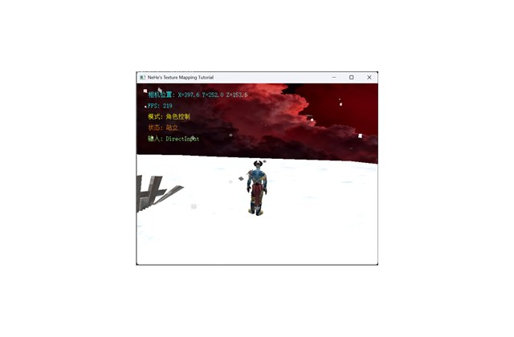
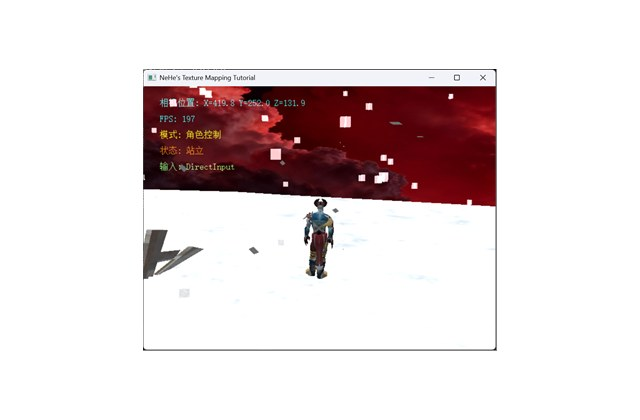
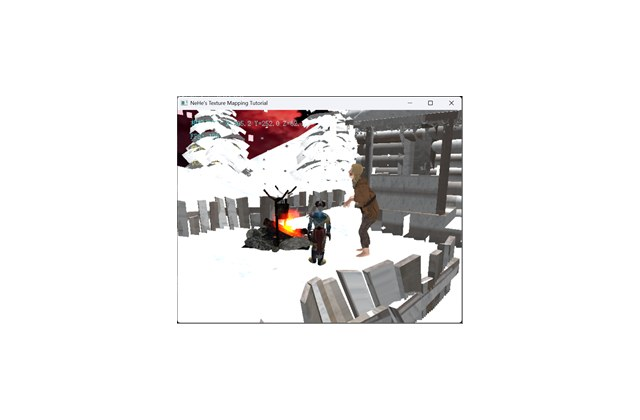
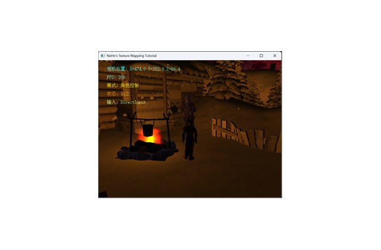
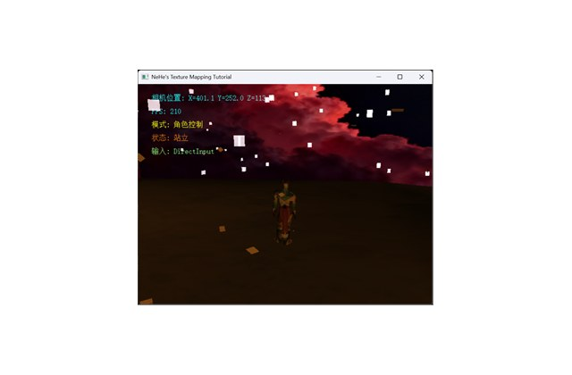

1. Overview
A 3D scene in which the user controls a Demon character walking through a blood-moon snowfield; snow falls continuously, and the character approaches a snow cottage, meets a witch and triggers an interaction. Built on the course's Lesson06 starter framework and extended with object-oriented model-management, camera and interaction classes.
- Scene & terrain: blood-moon skybox (six BMP textures replaced; PNG supported via stb_image.h); an FBX static model serves as the terrain; 3DS models load the witch and the campfire — dual pipelines to exercise different import techniques;
- Animated character: an FBX character with Mixamo skeletal animations, driven by a custom animation state machine (idle / walk / run / jump) with collision-based terrain following and a third-person follow camera;
- Interaction: DirectInput keyboard management; F4 toggles snowflake particle size; proximity triggers ray-cast detection and dialog text; L switches day/night lighting;
- Lighting & particles: a dedicated Light class (skybox constant, models shaded per mode); the campfire carries a distance-attenuated point light; a particle system renders the snowfall.
2. Screenshots


3. Particle Effects — Practice Course Extension
On top of the final project, I completed a particle-effects extension for the 3D Programming Fundamentals Practice course (graded OOP design 30% / special effects 30% / interaction 20% / report 20%). Two independent particle systems were designed and integrated — snowfall for the climate layer and a campfire as the scene's warm focal point.
- Snow system (extended from the provided
CSnowbase): particles are distributed inside a cylinder volume instead of a box so the edges look natural; each flake falls with light sinusoidal wind sway, fades in at the top and fades out near the ground; recycled to the top when leaving the volume; - Campfire system (reworked from the fountain particle class): particle colors were moved from the fountain's blue-white to the flame spectrum (red channel locked at 1.0, green randomized 0–0.6), emission radius tightened to 2.5 units, vertical speed cut to 0.3–0.5 with a matched tiny gravity of −0.01 so embers rise and wobble like real fire; billboarding keeps every quad facing the camera;
- Night lighting: a dual-light model — a dim blue directional "moonlight" (LIGHT0) plus an orange point light hovering over the campfire (LIGHT1) with linear + quadratic attenuation — plunges the scene into darkness so the fire becomes the core light source, realizing the "gathering round the fire on a snowy night" mood;
- Interaction (DirectInput): L toggles day ↔ night lighting; F4 cycles the snow system through light / normal / blizzard modes by modulating the visible particle count (40% / 100% / 150% of the base pool) and size scale (0.7 / 1.0 / 1.3).





3.1 Flame-spectrum particle reset
void CProtechny::ResetParticle(int i)
{
float x, y, z, vx, vy, vz;
// ==========================================
// 1. 修改喷射范围 (原来是0.5 -> 变为4倍 -> 2.0f)
// ==========================================
// 为了更明显，我们把范围设为 2.5f (半径)
x = m_vProtechnyCenter.x + 2.5f * (rand() % 100 - 50) / 100.0f;
// Y轴起始点稍微抬高一点点，防止陷入地面，确保能被看见
y = m_vProtechnyCenter.y + 1.0f;
z = m_vProtechnyCenter.z + 2.5f * (rand() % 100 - 50) / 100.0f;
m_pList[i].position = Vector3(x, y, z);
// ==========================================
// 2. 修改喷射高度 (变为原来的 1/10)
// ==========================================
// 原来的垂直速度 vy 是 3.0f 到 5.0f
// 1/10 的速度应该是 0.3f 到 0.5f
// 水平速度 vx, vz 也要相应减小，不然会扩散得太快
vx = 0.2f * (rand() % 100 - 50) / 100.0f; // 水平飘散
vy = 0.3f + 0.2f * (rand() % 100) / 100.0f; // 垂直速度仅 0.3~0.5
vz = 0.2f * (rand() % 100 - 50) / 100.0f;
m_pList[i].velocity = Vector3(vx, vy, vz);
// ==========================================
// 3. 修改重力 (非常重要！)
// ==========================================
// 如果速度变小了，重力必须也变小！
// 否则粒子还没飞起来就被重力压到地底下去了。
// 原来是 -0.2f，现在改为 -0.01f
m_pList[i].acceleration = Vector3(0.0f, -0.01f, 0.0f);
// ==========================================
// 4. 修改生命周期和大小
// ==========================================
// 粒子生命不用太长
m_pList[i].lifetime = 60 + rand() % 40;
m_pList[i].dec = 1.0f;
// 稍微调大一点粒子，让它显眼
m_pList[i].size = 3.0f + 2.0f * (rand() % 100) / 100.0f;
// ==========================================
// 5. 修改颜色 (橙色和红色)
// ==========================================
// 红色: R=1, G=0, B=0
// 橙色: R=1, G=0.5, B=0
// 只要把 G 分量在 0.0 到 0.6 之间随机，就能得到红橙渐变
m_pList[i].color[0] = 1.0f; // 红色分量始终拉满
m_pList[i].color[1] = 0.6f * (rand() % 100) / 100.0f; // 绿色分量随机，产生红->橙
m_pList[i].color[2] = 0.0f; // 蓝色分量为0
}3.2 Three-tier snow modes
// 初始化所有粒子
for (int i = 0; i < m_iNum; i++)
{
// 随机分布在圆柱体范围内，而不是正方体，这样边缘更自然
float angle = (rand() % 360) * 3.14159f / 180.0f;
float radius = (rand() % (int)SNOW_RANGE_XZ);
float x = cos(angle) * radius;
float z = sin(angle) * radius;
// 初始高度在整个高度范围内随机，这样一开始就有雪在空中，不用等它落下来
float y = (float)(rand() % (int)SNOW_HEIGHT_OFFSET);
// 存入相对位置
m_pList[i].position = Vector3(x, y, z);
// 速度设置：主要是向下(Y)，带有轻微的水平飘动
m_pList[i].velocity.x = (rand() % 20 - 10) * 0.1f; // 轻微风
m_pList[i].velocity.y = -(rand() % 50 + 50) * 0.5f; // 下落速度 -25 ~ -50
m_pList[i].velocity.z = (rand() % 20 - 10) * 0.1f; // 轻微风
m_pList[i].acceleration = Vector3(0.0, -0.1f, 0.0); // 极小的重力
// 大小
m_pList[i].size = SNOW_BASE_SIZE * (0.8f + (rand() % 40) * 0.01f);
// 颜色 (纯白)
m_pList[i].color[0] = 255;
m_pList[i].color[1] = 255;
m_pList[i].color[2] = 255;
m_pList[i].dec = 1.0f;
}
/** 设置雪花模式 */
void CSnow::SetMode(SnowMode mode)
{
m_eCurrentMode = mode;
switch (mode)
{
case SNOW_LIGHT:
m_iVisibleNum = (int)(m_iBaseNum * 0.4f); // 小雪更少
m_fSizeScale = 0.7f;
break;
case SNOW_HEAVY:
m_iVisibleNum = (int)(m_iBaseNum * 1.5f); // 确保不超过 Init 分配的内存
if (m_iVisibleNum > m_iNum) m_iVisibleNum = m_iNum;
m_fSizeScale = 1.3f;
break;
case SNOW_NORMAL:
default:
m_iVisibleNum = m_iBaseNum;
m_fSizeScale = 1.0f;
break;
}
}3.3 DirectInput toggles (L / F4)
// 5. 光照模式切换 (L键) - 使用DirectInput
static bool lKeyPressed = false;
if (IsKeyDown('L')) {
if (!lKeyPressed) {
m_Light.ToggleMode();
lKeyPressed = true;
}
}
else {
lKeyPressed = false;
}
// 6. 雪花模式切换 (F4键) - 使用DirectInput
static bool f4Pressed = false;
if (IsKeyDown(VK_F4)) {
if (!f4Pressed) {
SnowMode currentMode = m_Snow.GetMode();
SnowMode nextMode;
switch (currentMode) {
case SNOW_NORMAL: nextMode = SNOW_LIGHT; break;
case SNOW_LIGHT: nextMode = SNOW_HEAVY; break;
case SNOW_HEAVY: default: nextMode = SNOW_NORMAL; break;
}
m_Snow.SetMode(nextMode);
f4Pressed = true;
if (shouldPrintDebug) std::cout << "[雪花] 模式切换: " << m_Snow.GetModeName() << std::endl;
}
}
else {
f4Pressed = false;
}3.4 Dual-light night mode
void CLight::ToggleMode()
{
if (m_iMode == 1) {
m_iMode = 2;
std::cout << "[CLight] 切换到模式 2: 黑夜+火堆光" << std::endl;
}
else {
m_iMode = 1;
std::cout << "[CLight] 切换到模式 1: 原样(全亮)" << std::endl;
}
}
void CLight::Update()
{
if (m_iMode == 1)
{
// 模式1: 关闭所有光照，全亮
glDisable(GL_LIGHTING);
glDisable(GL_LIGHT0);
glDisable(GL_LIGHT1);
}
else // 模式2: 黑夜
{
// 1. 开启光照计算
glEnable(GL_LIGHTING);
// 2. 设置并开启 LIGHT0 (黑夜背景光)
glEnable(GL_LIGHT0);
glLightfv(GL_LIGHT0, GL_POSITION, m_LightPosition);
glLightfv(GL_LIGHT0, GL_AMBIENT, m_LightAmbient);
glLightfv(GL_LIGHT0, GL_DIFFUSE, m_LightDiffuse);
glLightfv(GL_LIGHT0, GL_SPECULAR, m_LightSpecular);
// 3. 设置并开启 LIGHT1 (火堆点光源)
glEnable(GL_LIGHT1);
glLightfv(GL_LIGHT1, GL_POSITION, m_FirePosition);
glLightfv(GL_LIGHT1, GL_DIFFUSE, m_FireDiffuse);
glLightfv(GL_LIGHT1, GL_AMBIENT, m_FireAmbient);
// 设置光照衰减 (让火光传不远)
// Constant=1.0, Linear=0.01, Quadratic=0.0001 是经验值
// 增加 Linear 或 Quadratic 的值会让光衰减得更快(范围更小)
glLightf(GL_LIGHT1, GL_CONSTANT_ATTENUATION, 1.0f);
glLightf(GL_LIGHT1, GL_LINEAR_ATTENUATION, 0.01f); // 线性衰减
glLightf(GL_LIGHT1, GL_QUADRATIC_ATTENUATION, 0.0002f); // 二次衰减(影响远处)
// 4. 设置全局环境光模型 (设为极暗)
GLfloat globalAmbient[] = { 0.0f, 0.0f, 0.0f, 1.0f }; // 全局几乎全黑
glLightModelfv(GL_LIGHT_MODEL_AMBIENT, globalAmbient);
}3.5 PNG texture support via stb_image
The original loaders only accepted BMP; integrating the stb_image single-header library added PNG/JPG support for particle sprites, with a white fallback texture if loading fails.
// 尝试使用 stbi_load 加载 (支持 PNG, JPG, BMP)
int width, height, nrChannels;
// 翻转Y轴，因为OpenGL纹理坐标原点在左下角
stbi_set_flip_vertically_on_load(true);
unsigned char* data = stbi_load(texPath, &width, &height, &nrChannels, 0);
if (data)
{
// 手动生成纹理 ID
glGenTextures(1, &m_texture.ID);
glBindTexture(GL_TEXTURE_2D, m_texture.ID);
// 根据通道数判断格式 (PNG通常是4通道RGBA，BMP是3通道RGB)
GLenum format = (nrChannels == 4) ? GL_RGBA : GL_RGB;
glTexImage2D(GL_TEXTURE_2D, 0, format, width, height, 0, format, GL_UNSIGNED_BYTE, data);
// 设置纹理参数
glTexParameteri(GL_TEXTURE_2D, GL_TEXTURE_WRAP_S, GL_CLAMP);
glTexParameteri(GL_TEXTURE_2D, GL_TEXTURE_WRAP_T, GL_CLAMP);
glTexParameteri(GL_TEXTURE_2D, GL_TEXTURE_MIN_FILTER, GL_LINEAR);
glTexParameteri(GL_TEXTURE_2D, GL_TEXTURE_MAG_FILTER, GL_LINEAR);4. Problems & solutions
- Missing textures: added debug logging to the loading pipeline and traced the issue to skeletal-binding export settings;
- Coordinate-system unification: models from different sources used inconsistent units and axes — used an on-screen printtext() coordinate overlay to align everything;
- Version-control lesson: after losing a working state to an editing mistake, I adopted milestone archives for every major step.
The project consolidated my understanding of the rendering pipeline — environment setup, model handling, interaction design and debugging — through hands-on object-oriented graphics programming.